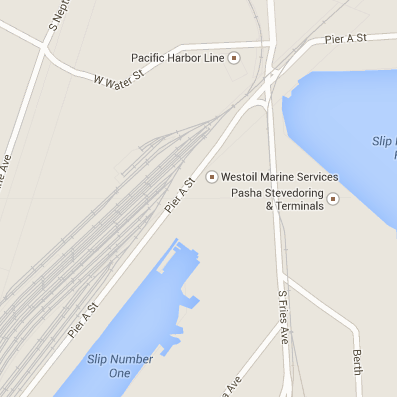
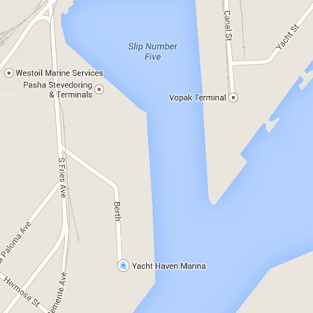

Cargoes include newsprint, cut paper, linerboard, coils, wire strand, crates, forest products, project cargo, machinery, construction equipment, and other specialized or weather-sensitive commodities.
Large warehouses protect weather sensitive cargo.
PST utilizes this 12-acre facility for all types of cargo that require a clean, smooth surface and protection from the elements. The configuration of the dock space and warehouse loading doors are ideal for achieving high production while maintaining cargo integrity and avoiding damage. A separate outside staging area is designed to accommodate large and project cargoes.
Twenty-seven truck loading bays span the length of the dock.
Trucking companies enjoy the easy freeway access and the multiple warehouse doors, both of which enable speedy cargo handling and transportation to inland destinations or vessel.
Productivity.
The spacious interior of the warehouses allows sorting ex vessel, an important feature to eliminate double handling and therby keeping costs down, production high and quality intact.

| Location: | Turning Basin North End, Main Channel, Port of Los Angeles |
| Berth Space: | 1700 linear feet |
| Depth at MLLW: | 32-35 feet |
| Land Area: | 12 acres, plus 5 additional available |
| Operation: | Breakbulk |
| Warehouses: | 180,000 sq. ft. in 2 buildings, 27-door, full-length loading dock |
| Features: | Rail access nearby |
| Operator: | Pasha Stevedoring & Terminals L.P. |
| Contact: | Fred Van Deventer, Vice President Contract Administration |
| Telephone: | 310 233 2000 |
Cargoes include steel products, such as coils of sheet, wire rod coils, square tubing, pipe, and rebar; breakbulk; forest products; heavy machinery and equipment; yachts; rolling stock; project cargoes; steel slabs; and containers. You name it, PST has the experience, skill and new equipment to handle any job.
The only omni-cargo facility in the port of Los Angeles.
This 40-care facility is the only true omni-cargo terminal in the port. PST has perfected this combo operation, offering shippers, trucking companies and consignees alternativesin order to keep their costs down and delivery times flexible.
Global connections.
Located in the heart of the busiest port complex in the United States, Berths 174-181 operated by Pasha Stevedoring & Terminals have quick access to the freeways and infrastructures that carry cargo to the rest of the nation. Import and export breakbulk and containerized cargo transported on ocean calling from all parts of the globe are transferred to and from on-dock railcars and trucks smoothly and efficiently.
One-stop shipping capabilities.
The expansive land area configuration of Berths 174-181 allows simultaneous containers and breakbulk operations of multi-purpose and cargo-specific vessels along with yard3, rail and truck operations. Three 41 MT gantry cranes are available to work heavy steel as well as containers.
Perfect for weather-sensitive cargo.
In addition to wide-open terminal and storage space available for dock subsorting and various cargoes, two large transit sheds/warehouses, measuring 255,000 square feet, provide ample room to segregate weather-sensitive cargo.

| Location: | Fries Avenue, East Basin, Port of Los Angeles |
| Berth Space: | 3300 linear feet |
| Depth at MLLW: | Container Berths: 45 feet (14.7 meters) General Berths: 35 feet (10.7 meters) |
| Land Area: | 40 acres |
| Gantry Cranes: | Three 41 MT capacity |
| Operation: | Customer-owned, Omni-Terminal |
| Rail Access: | Four parallel tracks, each 1000 feet |
| Features: | Truck scale Mi-Jack RTG: 100 LT Shuttle Life: 60 LT |
| Operator: | Pasha Stevedoring & Terminals L.P. |
| Contact: | Fred Van Deventer, Vice President Contract Administration |
| Telephone: | 310 233 2000 |